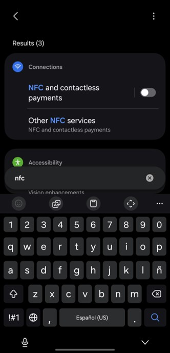
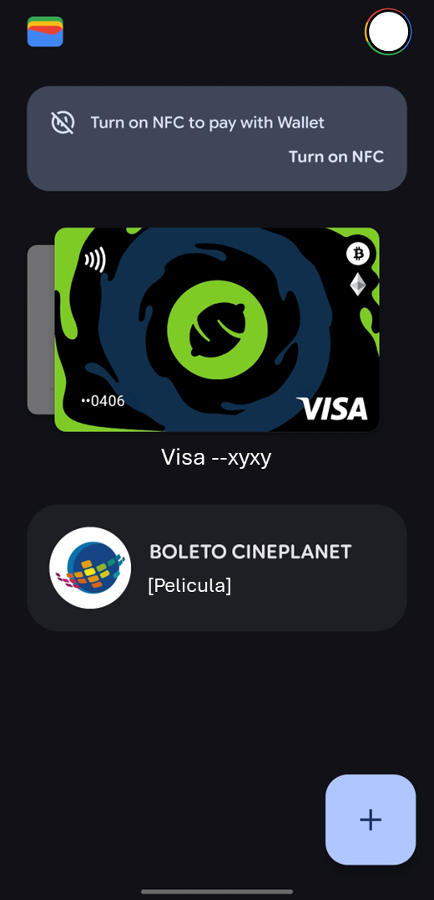

Dinero en el mundo digital
Mover dinero desde el celular es cómodo, pero requiere que conviertas tu dispositivo en una fortaleza.
Configura tu app bancaria
No basta con instalar la app bancaria; hay que asegurarla.
Limites diarios:
Configura un monto máximo de transferencia diaria (en mi caso es 400).
Si alguien accede a tu app, no podrá vaciarte la cuenta de un solo golpe.
Donde lo encuentro? La opcion esta en la configuracion de cada app. Por ejemplo, en yape es asi:
1. Abre Yape, arriba a la izquierda veras un circulo con el simbolo de un usuario.
2. Dale click y abajo encontraras Limites transaccionales, dale click y ponte un limite.
En BBVA haz lo siguiente:
1. Entra al BBVA, arriba a la derecha encontraras Menu.
2. Dale click y entra a lo primero: Configuracion.
3. En configuracion, dale click a Configuracion de operaciones.
4. Ahi puedes cambiar el monto maximo diario de transferencia a terceros BBVA y transferencia interbancaria.
Token digital:
Imaginalo como una "llave de seguridad digital". Es un código de 6 dígitos que cambia
automáticamente cada 60 segundos. Su función es confirmar que eres tú quien está haciendo una operación y no alguien que
te robó la contraseña.
Para que sirve el token digital?
Lo vas a necesitar cada vez que quieras "sacar" o "mover" un monto alto de dinero desde tu cuenta.
Como funciona?
Dependiendo de tu banco (BCP, BBVA, Interbank, Scotiabank, etc.) funciona de dos formas:
1. Automatico: En la mayoría de apps modernas, cuando haces una transferencia desde el celular,
la app "lee" el token por ti y procesa la operación sin que tengas que escribir nada o hacer algo.
2. Manual: Si estás haciendo una compra o transferencia desde una computadora, la web te pedirá un "Código Token".
Ahí es cuando abres la app en tu celular, buscas la opción "Token Digital" y copias el número que aparece.
Donde esta la opcion "token" en mi app?
Normalmente esta en configuracion. Por ejemplo, en BBVA esta en "Menu" (arriba a la derecha).
Ademas de todo eso, recuerda que debes tener una contraseña segura (y huella digital si esta disponible en tu celular).
Esa contraseña/huella digital sera la primera gran barrera contra los criminales.
El poder del NFC
El nombre puede intimidar un poco no....? No te preocupes, el NFC es algo facil de enterder, incluso es mas rapido y facil para nosotros.
Mucha gente no lo usa porque simplemente no sabe como funciona o tiene miedo de ser inseguro pero, ironicamente, es mas seguro que pagar con tu tarjeta fisica.
Las siglas significan Near Field Communication (Comunicación de Campo Cercano). En
palabras simples, es una tecnología que permite que dos dispositivos "hablen" entre sí cuando están muy cerca (a menos de 4 centímetros).
El NFC es lo que permite los pagos sin contacto (Contactless).
La función principal es que podras pagar con tu celular (o incluso reloj) sin sacar tu tarjeta física.
Lamentablemente, no todos los celulares lo tienen. Como puedo saber si mi celular lo tiene?
En tu celular: Debes revisar en "Ajustes" o "Configuración" y buscar la palabra NFC.
La mayoría de celulares de gama media y alta de los últimos años lo tienen.
Si tu celular tiene la opcion. Felicidades!!! Ahora, sigue estos pasos:
1. Billetera digitales>: Primero instala Google Wallet o Apple Pay (si tienes Iphone). Las billeteras digitales te permiten usar tu celular como una tarjeta.
2. El proceso de pago: En lugar de sacar tu tarjeta fisica y acercarla al POS (la maquinita donde se paga).
Ahora solo tienes que:
1. Desbloquear tu celular.
2. Entra a configuracion y busca (en la barra de arriba) "NFC".
3. Activa la opcion
4. Entra a la app (google wallet o apple pay).
5. Agrega tus tarjetas (sigue los pasos).
6. Acerca tu celular a la maquina pos como si fuera una tarjeta (mantenlo muy cerca durante 4 segundos).
Nota: Actualmente creo que ni siquiera debes abrir la app (google wallet), solo activa la opcion NFC en configuracion y listo. Solo acerca tu celular.
Nota: Despues de pagar desactiva la opcion por seguridad. Mientras tu celular esta apagado no hay problema pero igual hazlo.

Google Wallet tambien sirve para guardar tus entradas al cine y otras cosas (tu mismo descubrelo). Aqui te dejo un ejemplo de como se ve. Puedes agregar varias tarjetas:

Porque el NFC es mas seguro?
Puedes saltarte esta parte si quieres pero te recomiendo que lo leas para entender mas. Sera facil:
1. La distancia: La primera capa de seguridad es física. El NFC solo funciona a una distancia de menos de 4 centímetros.
A diferencia del Wi-Fi o Bluetooth, que llegan a habitaciones contiguas, para "hackear" un NFC alguien tendría que estar prácticamente pegado a ti, lo cual es muy difícil de hacer sin que te des cuenta.
2. El token: Cuando pagas, el sistema no envía el número real de tu tarjeta. En su lugar, usa la Tokenización:
El teléfono genera un código de un solo uso (el token) para esa compra específica. Si un hacker lograra interceptar ese código, no le serviría de nada porque caduca al instante y no contiene tus datos bancarios reales.
3. La "Llave" de Seguridad (Elemento Seguro): Tu celular tiene un chip especial llamado Elemento Seguro (SE). Es como una caja fuerte dentro del procesador que está aislada del resto del teléfono.
Incluso si tu celular tiene un virus o malware, ese chip está blindado y no permite que nadie entre a ver tus llaves de pago.
No todos los celulares lo tienen pero los celulares que soportan la tecnologia NFC normalmente si lo tienen.
4. Tú tienes el control: Incluso si alguien te quita el teléfono y lo acerca a una terminal, no podra hacerlo ya que el celular tiene que estar desbloqueado. El NFC puede estar prendido pero no funciona hasta que tu lo desbloques tu celular con tu contraseña, huella digital, FaceID (tu cara), etc.
Tarjetas Digitales y CVV Dinámico
Es una versión de tu tarjeta de crédito o débito que vive dentro de la aplicación de tu banco (Interbank, BCP, BBVA, Scotiabank, etc.). No es
un plástico físico que guardas en la billetera, sino un conjunto de datos (número, fecha de vencimiento y CVV) que ves en tu celular.
Para que sirve?
Principalmente para compras por internet (Netflix, pedidos por delivery, entradas al cine, etc) pero tambien la puedes usar para tus compras
a diario (en metro, plazavea, tambo, etc) siempre y cuando tu celular (o reloj) tenga nfc.
Hay 2 formas que los bancos peruanos emiten las tarjetas digitales:
1. Tarjeta totalmente digital: Bancos como BBVA o Interbank tienen la opcion de: Abrir una cuenta y tener una tarjeta digital al toque. Todo
desde tu celular y sin tener que ir al banco.
2. Tarjeta fisica sin datos impresos: Muchos bancos en Perú ahora emiten tarjetas físicas "sin datos". Si un criminal te la roba, el solo tendra un pedazo
de plastico sin ningun dato. Si el criminal quiere hacer compras online no va a poder ya que no tiene la fecha de vencimiento, cvv, numero de tarjeta. No
tiene nada.
Que es el CVV dinamico?
Nosotros ya sabemos lo que es el CVV que significa Card Verification Value (Valor de Verificación de la Tarjeta).
El CVV son los 3 numeritos que estan detras de la tarjeta. El "dinámico" es la evolución de eso.
En lugar de ser un número fijo impreso en el plástico, es un código que cambia cada 2 o 5 minutos.
Como funciona?
1. Entras a la app de tu banco.
2. Entra a tu tarjeta y busca la opcion "ver datos de tarjeta" o "CVV dinamico".
3. La app te mostrara 3 digitos y un cronometro.
4. Copia ese codigo en la web que estas comprando.
5. Una vez que el tiempo se agota, ese código deja de funcionar y se genera uno nuevo.
¿Por qué es más seguro? Si un hacker logra robar los datos de tu tarjeta en una página web insegura,
no podrá hacer nada después, porque el código CVV que robó expira en 5 minutos o menos.
NOTA: Si vas a pagar algo mensual (como Spotify o netflix), usa el CVV dinámico solo la primera
vez para registrar la tarjeta; el cobro seguirá funcionando aunque el código cambie después.
Compras por internet (verifica si la pagina es segura)
Muchas personas tienen miedo a comprar por internet. Ese miedo es por la falta de conocimiento en seguridad. Aqui te dare los tips mas importantes:
1. El candado y el HTTPS: Mira la barra de direcciones del navegador. Debe aparecer un icono de un candado cerrado y la dirección
debe empezar con https:// (la "s" es de secure o seguro). Si solo dice http://, ¡huye!
2. Reputacion de la pagina: No compres en el primer anuncio que veas en redes sociales. Compra en sitios conocidos como mercadolibre (incluso tiene su app).
Si no conoces una pagina entonces tomate el tiempo de buscar el nombre en google e investigar si es seguro (vale la pena hacerlo).
Si los precios son demasiado buenos para ser verdad (ejemplo: un iPhone 17 a $800), probablemente sea una estafa.
3. Usa tarjetas virtuales: Las tarjetas virtuales (o tarjetas fisicas sin datos impresos) tienen un CVV dinamico. Si, por error, entrastes a una
pagina insegura y pones tus datos. El criminal recibira tus datos pero el CVV no servira ya que cambia cada 5 minutos. De igual manera ten cuidado,
solo compra en paginas conocidas (como amazon, mercadolibre, etc).
4. No guardes tus datos: Cuando la página te pregunte "¿Deseas guardar tu tarjeta para futuras compras?", selecciona NO.
Es mejor escribirla cada vez que compres a que tus datos queden almacenados en un sitio ajeno.
5. Usa tarjeta de credito: Las tarjetas de credito tienen seguros contra fraude y cargos no reconocidos, con la tarjeta de debito es más difícil reclamar un fraude.
En resumen: Las tarjeta de credito es la opción preferida para compras online por su mayor protección legal.
NOTA: Si el sitio te pide el PIN secreto que usas en el cajero automático (clave de 4 digitos o clave de cajero), es una estafa. Las tiendas online solo
necesitan el número de tarjeta, la fecha de vencimiento y el CVV (los 3 números de atrás).